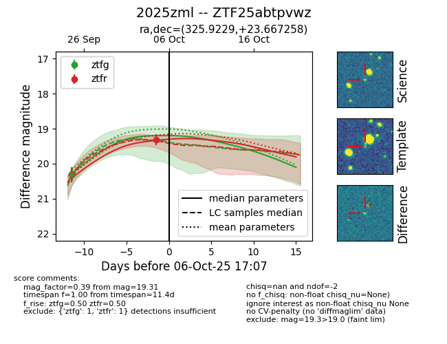
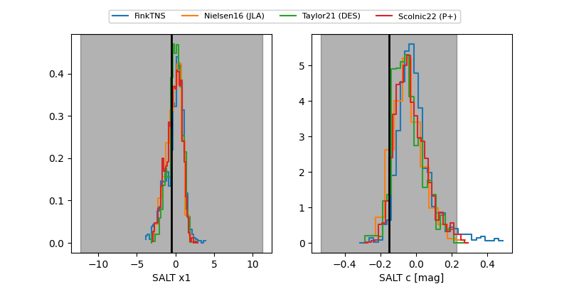

FINK: ZTF25abtpvwz
Lasair: ZTF25abtpvwz
ALeRCE: ZTF25abtpvwz
TNS: 2025zml
YSE: 2025zml
ZTF25abtpvwz (ztf,fink)
2025zml (tns,yse)
equatorial (ra, dec) = (325.9229,+23.66726)
galactic (l, b) = (76.7647,-21.93387)


last ztfg=20.30, ztfr=19.31
1 ztfg, 1 ztfr detections